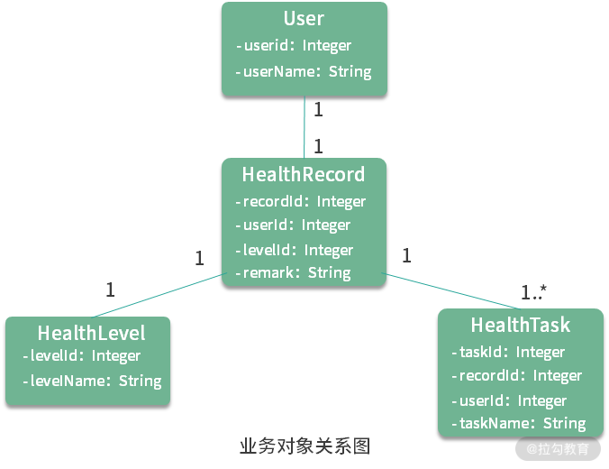
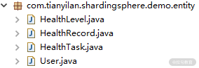
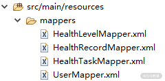
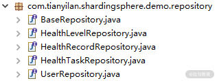
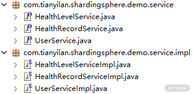
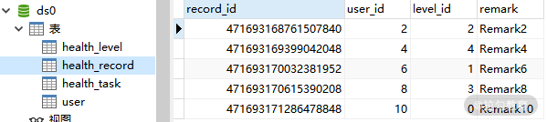
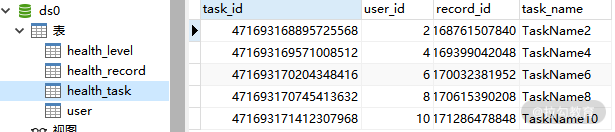
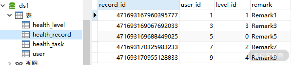
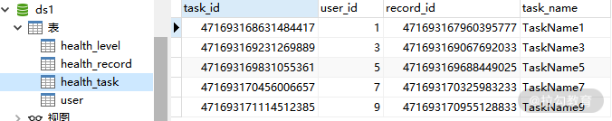

- 00 如何正确学习一款分库分表开源框架？.md.html
- 01 从理论到实践：如何让分库分表真正落地？.md.html
- 02 顶级项目：ShardingSphere 是一款什么样的 Apache 开源软件？.md.html
- 03 规范兼容：JDBC 规范与 ShardingSphere 是什么关系？.md.html
- 04 应用集成：在业务系统中使用 ShardingSphere 的方式有哪些？.md.html
- 05 配置驱动：ShardingSphere 中的配置体系是如何设计的？.md.html
- 06 数据分片：如何实现分库、分表、分库+分表以及强制路由？（上）.md.html
- 07 数据分片：如何实现分库、分表、分库+分表以及强制路由？（下）.md.html
- 08 读写分离：如何集成分库分表+数据库主从架构？.md.html
- 09 分布式事务：如何使用强一致性事务与柔性事务？.md.html
- 10 数据脱敏：如何确保敏感数据的安全访问？.md.html
- 11 编排治理：如何实现分布式环境下的动态配置管理？.md.html
- 12 从应用到原理：如何高效阅读 ShardingSphere 源码？.md.html
- 13 微内核架构：ShardingSphere 如何实现系统的扩展性？.md.html
- 14 分布式主键：ShardingSphere 中有哪些分布式主键实现方式？.md.html
- 15 解析引擎：SQL 解析流程应该包括哪些核心阶段？（上）.md.html
- 16 解析引擎：SQL 解析流程应该包括哪些核心阶段？（下）.md.html
- 17 路由引擎：如何理解分片路由核心类 ShardingRouter 的运作机制？.md.html
- 18 路由引擎：如何实现数据访问的分片路由和广播路由？.md.html
- 19 路由引擎：如何在路由过程中集成多种路由策略和路由算法？.md.html
- 20 改写引擎：如何理解装饰器模式下的 SQL 改写实现机制？.md.html
- 21 执行引擎：分片环境下 SQL 执行的整体流程应该如何进行抽象？.md.html
- 22 执行引擎：如何把握 ShardingSphere 中的 Executor 执行模型？（上）.md.html
- 23 执行引擎：如何把握 ShardingSphere 中的 Executor 执行模型？（下）.md.html
- 24 归并引擎：如何理解数据归并的类型以及简单归并策略的实现过程？.md.html
- 25 归并引擎：如何理解流式归并和内存归并在复杂归并场景下的应用方式？.md.html
- 26 读写分离：普通主从架构和分片主从架构分别是如何实现的？.md.html
- 27 分布式事务：如何理解 ShardingSphere 中对分布式事务的抽象过程？.md.html
- 28 分布式事务：ShardingSphere 中如何集成强一致性事务和柔性事务支持？（上）.md.html
- 29 分布式事务：ShardingSphere 中如何集成强一致性事务和柔性事务支持？（下）.md.html
- 30 数据脱敏：如何基于改写引擎实现低侵入性数据脱敏方案？.md.html
- 31 配置中心：如何基于配置中心实现配置信息的动态化管理？.md.html
- 32 注册中心：如何基于注册中心实现数据库访问熔断机制？.md.html
- 33 链路跟踪：如何基于 Hook 机制以及 OpenTracing 协议实现数据访问链路跟踪？.md.html
- 34 系统集成：如何完成 ShardingSphere 内核与 Spring+SpringBoot 的无缝整合？.md.html
- 35 结语：ShardingSphere 总结及展望.md.html
- 捐赠
06 数据分片：如何实现分库、分表、分库+分表以及强制路由？（上）
通过前面几个课时的介绍，相信你对 ShardingSphere 已经有了初步了解。从今天开始，我将带领你通过案例分析逐步掌握 ShardingSphere 的各项核心功能，首当其冲的就是分库分表机制。
单库单表系统
我们先从单库单表系统说起。在整个课程中，如果没有特殊强调，我们将默认使用 Spring Boot 集成和 ShardingSphere 框架，同时基于 Mybatis 实现对数据库的访问。
导入开发框架
系统开发的第一步是导入所需的开发框架。在下面这段代码中，我们新建了一个 Spring Boot 代码工程，在 pom 文件中需要添加对 sharding-jdbc-spring-boot-starter 和 mybatis-spring-boot-starter 这两个 starter 的引用：
<dependency>
<groupId>org.apache.shardingsphere</groupId>
<artifactId>sharding-jdbc-spring-boot-starter</artifactId>
</dependency>
<dependency>
<groupId>org.mybatis.spring.boot</groupId>
<artifactId>mybatis-spring-boot-starter</artifactId>
</dependency>
开发环境初始化要做的工作也就是这些，下面我们来介绍案例的业务场景。
梳理业务场景
我们考虑一个在医疗健康领域中比较常见的业务场景。在这类场景中，每个用户（User）都有一份健康记录（HealthRecord），存储着代表用户当前健康状况的健康等级（HealthLevel），以及一系列健康任务（HealthTask）。通常，医生通过用户当前的健康记录创建不同的健康任务，然后用户可以通过完成医生所指定的任务来获取一定的健康积分，而这个积分决定了用户的健康等级，并最终影响到整个健康记录。健康任务做得越多，健康等级就越高，用户的健康记录也就越完善，反过来健康任务也就可以越做越少，从而形成一个正向的业务闭环。这里，我们无意对整个业务闭环做过多的阐述，而是关注这一业务场景下几个核心业务对象的存储和访问方式。
在这个场景下，我们关注 User、HealthRecord、HealthLevel 和 HealthTask 这四个业务对象。在下面这张图中，对每个业务对象给出最基础的字段定义，以及这四个对象之间的关联关系：

完成基础功能
既然采用 Mybatis 作为 ORM 框架，那么就需要遵循 Mybatis 的开发流程。首先，我们需要完成各个业务实体的定义：
 业务实体的类定义
基于这些业务实体，我们需要完成对应的 Mapper 文件编写，我把这些 Mapper 文件放在代码工程的 resources 目录下：
 Mybatis Mapper 文件定义
下一步是数据源信息的配置，我们把这些信息放在一个单独的 application-traditional.properties 配置文件中。
spring.datasource.driverClassName = com.mysql.jdbc.Driver
spring.datasource.url = jdbc:mysql://localhost:3306/ds
spring.datasource.username = root
spring.datasource.password = root
按照 Spring Boot 的配置约定，我们在 application.properties 配置文件中把上述配置文件设置为启动 profile。通过使用不同的 profile，我们可以完成不同配置体系之间的切换。
spring.profiles.active=traditional
接下来要做的事情就是创建 Repository 层组件：
 Repository 层接口定义
最后，我们设计并实现了相关的三个服务类，分别是 UserService、HealthLevelService 和 HealthRecordService。
 Service 层接口和实现类定义
通过 UserService，我们会插入一批用户数据用于完成用户信息的初始化。然后，我们有一个 HealthLevelService，专门用来初始化健康等级信息。请注意，与其他业务对象不同，健康等级信息是系统中的一种典型字典信息，我们假定系统中存在 5 种健康等级。
第三个，也是最重要的服务就是 HealthRecordService，我们用它来完成 HealthRecord 以及 HealthTask 数据的存储和访问。这里以 HealthRecordService 服务为例，下面这段代码给出了它的实现过程：
@Service
public class HealthRecordServiceImpl implements HealthRecordService {
@Autowired
private HealthRecordRepository healthRecordRepository;
@Autowired
private HealthTaskRepository healthTaskRepository;
@Override
public void processHealthRecords() throws SQLException{
insertHealthRecords();
}
private List<Integer> insertHealthRecords() throws SQLException {
List<Integer> result = new ArrayList<>(10);
for (int i = 1; i <= 10; i++) {
HealthRecord healthRecord = insertHealthRecord(i);
insertHealthTask(i, healthRecord);
result.add(healthRecord.getRecordId());
}
return result;
}
private HealthRecord insertHealthRecord(final int i) throws SQLException {
HealthRecord healthRecord = new HealthRecord();
healthRecord.setUserId(i);
healthRecord.setLevelId(i % 5);
healthRecord.setRemark("Remark" + i);
healthRecordRepository.addEntity(healthRecord);
return healthRecord;
}
private void insertHealthTask(final int i, final HealthRecord healthRecord) throws SQLException {
HealthTask healthTask = new HealthTask();
healthTask.setRecordId(healthRecord.getRecordId());
healthTask.setUserId(i);
healthTask.setTaskName("TaskName" + i);
healthTaskRepository.addEntity(healthTask);
}
}
现在，我们已经从零开始实现了一个完整业务场景所需要的 DAO 层和 Service 层组件。这些组件在业务逻辑上都非常简单，而在技术上也是完全采用了 Mybatis 的经典开发过程。最后，我们可以通过一组简单的单元测试来验证这些组件是否能够正常运行。下面这段代码以 UserServiceTest 类为例给出它的实现，涉及 @RunWith、@SpringBootTest 等常见单元测试注解的使用：
@RunWith(SpringRunner.class)
@SpringBootTest(webEnvironment = SpringBootTest.WebEnvironment.MOCK)
public class UserServiceTest {
@Autowired
private UserService userService;
@Test
public void testProcessUsers() throws Exception {
userService.processUsers();
}
}
运行这个单元测试，我们可以看到测试通过，并且在数据库的 User 表中也看到了插入的数据。至此，一个单库单表的系统已经构建完成。接下来，我们将对这个系统做分库分表改造。
在传统单库单表的数据架构上进行分库分表的改造，开发人员只需要做一件事情，那就是基于上一课时介绍的 ShardingSphere 配置体系完成针对具体场景的配置工作即可，所有已经存在的业务代码都不需要做任何的变动，这就是 ShardingSphere 的强大之处。让我们一起开始吧。
系统改造：如何实现分库？
作为系统改造的第一步，我们首先来看看如何基于配置体系实现数据的分库访问。
初始化数据源
针对分库场景，我们设计了两个数据库，分别叫 ds0 和 ds1。显然，针对两个数据源，我们就需要初始化两个 DataSource 对象，这两个 DataSource 对象将组成一个 Map 并传递给 ShardingDataSourceFactory 工厂类：
spring.shardingsphere.datasource.names=ds0,ds1
spring.shardingsphere.datasource.ds0.type=com.alibaba.druid.pool.DruidDataSource
spring.shardingsphere.datasource.ds0.driver-class-name=com.mysql.jdbc.Driver
spring.shardingsphere.datasource.ds0.url=jdbc:mysql://localhost:3306/ds0
spring.shardingsphere.datasource.ds0.username=root
spring.shardingsphere.datasource.ds0.password=root
spring.shardingsphere.datasource.ds1.type=com.alibaba.druid.pool.DruidDataSource
spring.shardingsphere.datasource.ds1.driver-class-name=com.mysql.jdbc.Driver
spring.shardingsphere.datasource.ds1.url=jdbc:mysql://localhost:3306/ds1
spring.shardingsphere.datasource.ds1.username=root
spring.shardingsphere.datasource.ds1.password=root
设置分片策略
明确了数据源之后，我们需要设置针对分库的分片策略：
spring.shardingsphere.sharding.default-database-strategy.inline.sharding-column=user_id
spring.shardingsphere.sharding.default-database-strategy.inline.algorithm-expression=ds$->{user_id % 2}
我们知道，在 ShardingSphere 中存在一组 ShardingStrategyConfiguration，这里使用的是基于行表达式的 InlineShardingStrategyConfiguration。 InlineShardingStrategyConfiguration 包含两个需要设置的参数，一个是指定分片列名称的 shardingColumn，另一个是指定分片算法行表达式的 algorithmExpression。在我们的配置方案中，将基于 user_id 列对 2 的取模值来确定数据应该存储在哪一个数据库中。同时，注意到这里配置的是“default-database-strategy”项。结合上一课时的内容，设置这个配置项相当于是在 ShardingRuleConfiguration 中指定了默认的分库 ShardingStrategy。
设置绑定表和广播表
接下来我们需要设置绑定表。绑定表（BindingTable）是 ShardingSphere 中提出的一个新概念，我来给你解释一下。
所谓绑定表，是指与分片规则一致的一组主表和子表。例如，在我们的业务场景中，health_record 表和 health_task 表中都存在一个 record_id 字段。如果我们在应用过程中按照这个 record_id 字段进行分片，那么这两张表就可以构成互为绑定表关系。
引入绑定表概念的根本原因在于，互为绑定表关系的多表关联查询不会出现笛卡尔积，因此关联查询效率将大大提升。举例说明，如果所执行的为下面这条 SQL：
SELECT record.remark_name FROM health_record record JOIN health_task task ON record.record_id=task.record_id WHERE record.record_id in (1, 2);
如果我们不显式配置绑定表关系，假设分片键 record_id 将值 1 路由至第 1 片，将数值 2 路由至第 0 片，那么路由后的 SQL 应该为 4 条，它们呈现为笛卡尔积：
SELECT record.remark_name FROM health_record0 record JOIN health_task0 task ON record.record_id=task.record_id WHERE record.record_id in (1, 2);
SELECT record.remark_name FROM health_record0 record JOIN health_task1 task ON record.record_id=task.record_id WHERE record.record_id in (1, 2);
SELECT record.remark_name FROM health_record1 record JOIN health_task0 task ON record.record_id=task.record_id WHERE record.record_id in (1, 2);
SELECT record.remark_name FROM health_record1 record JOIN health_task1 task ON record.record_id=task.record_id WHERE record.record_id in (1, 2);
然后，在配置绑定表关系后，路由的 SQL 就会减少到 2 条：
SELECT record.remark_name FROM health_record0 record JOIN health_task0 task ON record.record_id=task.record_id WHERE record.record_id in (1, 2);
SELECT record.remark_name FROM health_record1 record JOIN health_task1 task ON record.record_id=task.record_id WHERE record.record_id in (1, 2);
请注意，如果想要达到这种效果，互为绑定表的各个表的分片键要完全相同。在上面的这些 SQL 语句中，我们不难看出，这个需要完全相同的分片键就是 record_id。
让我们回到案例中的场景，显然，health_record 和 health_task 应该互为绑定表关系。所以，我们可以在配置文件中添加对这种关系的配置：
spring.shardingsphere.sharding.binding-tables=health_record, health_task
介绍完绑定表，再来看广播表的概念。所谓广播表（BroadCastTable），是指所有分片数据源中都存在的表，也就是说，这种表的表结构和表中的数据在每个数据库中都是完全一样的。广播表的适用场景比较明确，通常针对数据量不大且需要与海量数据表进行关联查询的应用场景，典型的例子就是每个分片数据库中都应该存在的字典表。
同样回到我们的场景，对于 health_level 表而言，由于它保存着有限的健康等级信息，可以认为它就是这样的一种字典表。所以，我们也在配置文件中添加了对广播表的定义，在下面这段代码中你可以看到：
spring.shardingsphere.sharding.broadcast-tables=health_level
设置表分片规则
通过前面的这些配置项，我们根据需求完成了 ShardingRuleConfiguration 中与分库操作相关的配置信息设置。我们知道 ShardingRuleConfiguration 中的 TableRuleConfiguration 是必填项。所以，我们来看一下这个场景下应该如何对表分片进行设置。
TableRuleConfiguration 是表分片规则配置，包含了用于设置真实数据节点的 actualDataNodes；用于设置分库策略的 databaseShardingStrategyConfig；以及用于设置分布式环境下的自增列生成器的 keyGeneratorConfig。前面已经在 ShardingRuleConfiguration 中设置了默认的 databaseShardingStrategyConfig，现在我们需要完成剩下的 actualDataNodes 和 keyGeneratorConfig 的设置。
对于 health_record 表而言，由于存在两个数据源，所以，它所属于的 actual-data-nodes 可以用行表达式 ds$->{0..1}.health_record 来进行表示，代表在 ds0 和 ds1 中都存在表 health_record。而对于 keyGeneratorConfig 而言，通常建议你使用雪花算法。明确了这些信息之后，health_record 表对应的 TableRuleConfiguration 配置也就顺理成章了：
spring.shardingsphere.sharding.tables.health_record.actual-data-nodes=ds$->{0..1}.health_record
spring.shardingsphere.sharding.tables.health_record.key-generator.column=record_id
spring.shardingsphere.sharding.tables.health_record.key-generator.type=SNOWFLAKE
spring.shardingsphere.sharding.tables.health_record.key-generator.props.worker.id=33
同样的，health_task 表的配置也完全类似，这里需要根据实际情况调整 key-generator.column 的具体数据列：
spring.shardingsphere.sharding.tables.health_task.actual-data-nodes=ds$->{0..1}.health_task
spring.shardingsphere.sharding.tables.health_task.key-generator.column=task_id
spring.shardingsphere.sharding.tables.health_task.key-generator.type=SNOWFLAKE
spring.shardingsphere.sharding.tables.health_task.key-generator.props.worker.id=33
让我们重新执行 HealthRecordTest 单元测试，并检查数据库中的数据。下面这张图是 ds0 中的 health_record 和 health_task 表：
 ds0 中 health_record 表数据
 ds0 中 health_task 表数据
而这张图是 ds1 中的 health_record 和 health_task 表：
 ds1 中 health_record 表数据
 ds1 中 health_task 表数据
显然，这两张表的数据已经正确进行了分库。
小结
从本课时开始，我们正式进入到 ShardingSphere 核心功能的讲解。为了介绍这些功能特性，我们将从单库单表架构讲起，基于一个典型的业务场景梳理数据操作的需求，并给出整个代码工程的框架，以及基于测试用例验证数据操作结果的实现过程。今天的内容关注于如何实现分库操作，我们通过引入 ShardingSphere 中强大的配置体系实现了分库效果。
这里给你留一道思考题：如何理解绑定表和广播表的含义和作用？
分库是 ShardingSphere 中分片引擎的核心功能之一，也可以说是最简单的功能之一。在下一课时中，我们将继续介绍分表、分库+分表以及强制路由等分片机制。
© 2019 - 2023 Liangliang Lee. Powered by gin and hexo-theme-book.